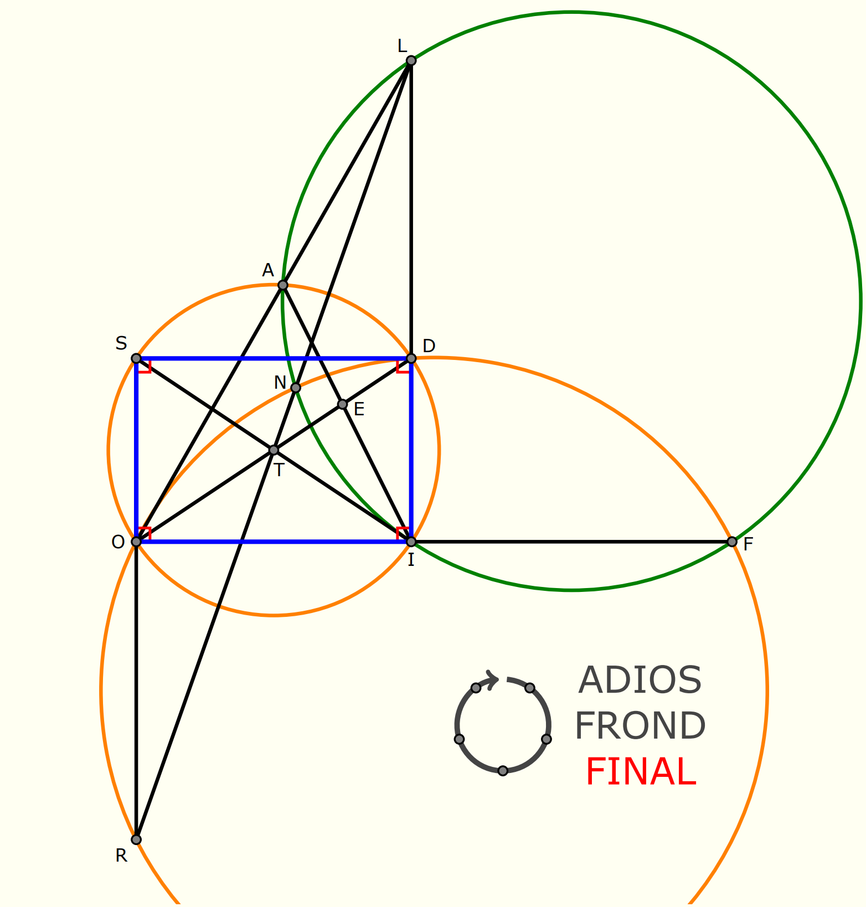

Solution: Circular Reasoning
Answer: FINAL
Written by Hadyn Tang
We are given an underspecified geometric diagram, with a rectangle and various points.
Additionally, we have two five-letter words: ADIOS and FROND, which consist of five letters
which are points in the diagram. By the diagram to the left of the words, and the puzzle title
Circular Reasoning, we might be able to guess that this has something to do with circles;
indeed, checking with a compass or some other means would indicate that these pentagons are cyclic.
Thus, given we also have a ????? under our five-letter words, it makes sense that we want to
identify another cyclic pentagon in the diagram. There are two different ways we could do this:
either we look at the diagram and guess a cyclic pentagon (perhaps confirming by drawing a circle
with a compass), or by angle chasing on the diagram with the two given circles (which turns out to
be a configuration related to the orthocentre; this has many known circles).
Whatever the case, spotting the cyclic pentagon, and then reading it in clockwise order from the top as suggested by the arrow gives the answer FINAL.
Click to show the diagram with circles included

Author’s Note
There have been several hunt puzzles involving Olympiad-level geometry, such as X Marks the Spot, but ideas are hard to come by. Since we wanted a puzzle that would encourage students to use their compasses, this idea arose.